01
GIS & Spatial Analysis
Transforming spatial data into clear and actionable information.
Supporting projects through spatial analysis, environmental reporting, data management, field surveys, and effective coordination.
I am Safiun, S.P., M.Si., an independent consultant with a multidisciplinary background in geospatial analysis, environmental and land resources, data management, field surveys, and project support.
My experience includes supporting government institutions, research organizations, universities, and community-based initiatives through spatial analysis, field data collection, environmental and technical reporting, data processing, project coordination, and stakeholder communication.
With an academic background in Soil Science and Land Resources Management, I combine technical analysis with practical field experience to transform data and project requirements into clear, reliable, and actionable outputs.
Multidisciplinary support across geospatial work, environmental reporting, field operations, data management, and project implementation.
Transforming spatial data into clear and actionable information.
Analyzing satellite and spatial imagery to understand environmental and land changes.
Supporting environmental and land-resource projects through structured analysis and reporting.
Connecting field observations with reliable spatial and environmental data.
Organizing raw data into structured information that supports analysis and reporting.
Supporting projects from implementation through documentation and stakeholder coordination.
Supporting plantation, mining, environmental, and agricultural field operations through monitoring and coordination.
A selection of work involving spatial analysis, land resources, field surveys, data management, agriculture, plantation, and mining-related support.
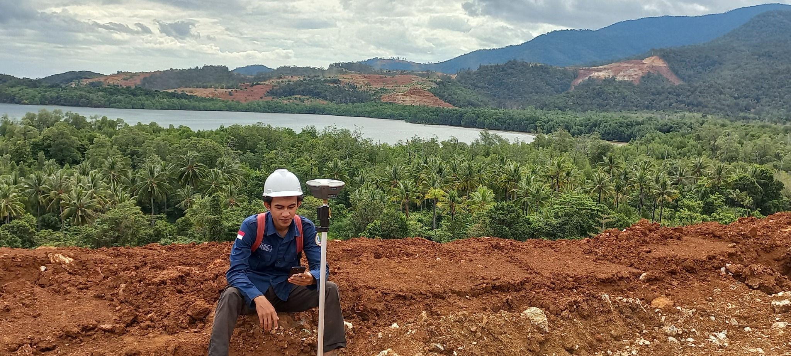
Spatial surveys, GPS-based data collection, field verification, and support for regional planning outputs.
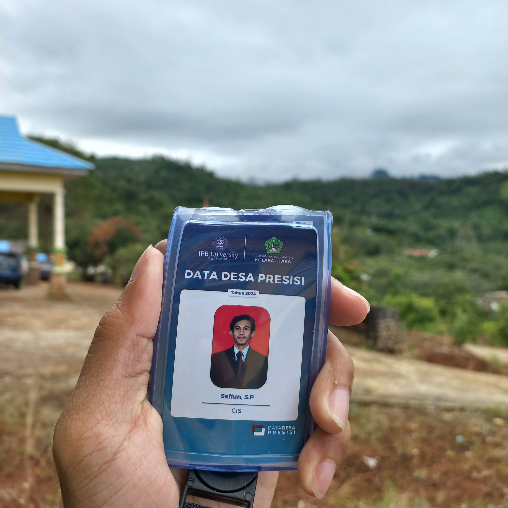
Integration of village-scale geospatial, demographic, and socio-economic information into structured spatial data.
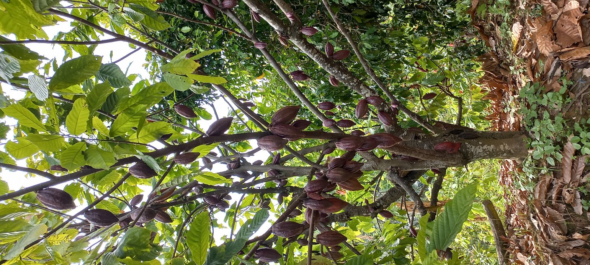
GPS-based plantation boundary mapping, attribute data collection, field validation, and spatial database development.
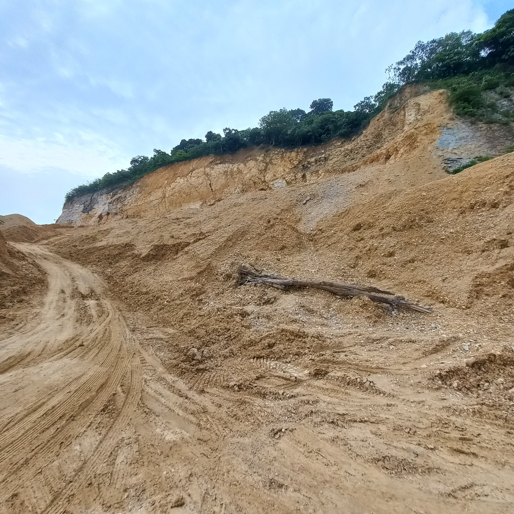
Boundary verification, spatial surveys, field documentation, and supporting mapping for land-related activities.
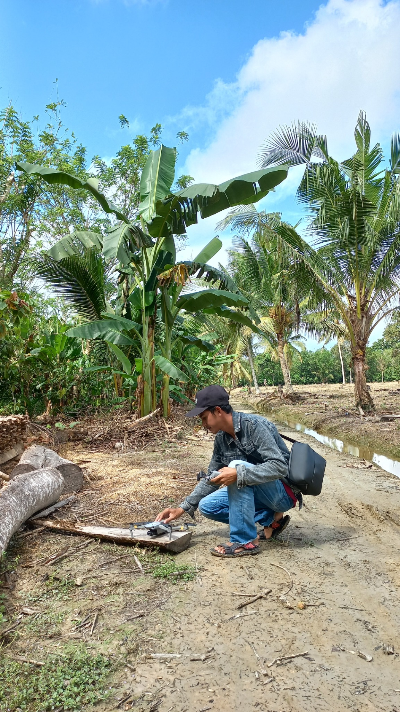
UAV-based mapping, ground verification, spatial validation, and mapping support for reclamation activities.
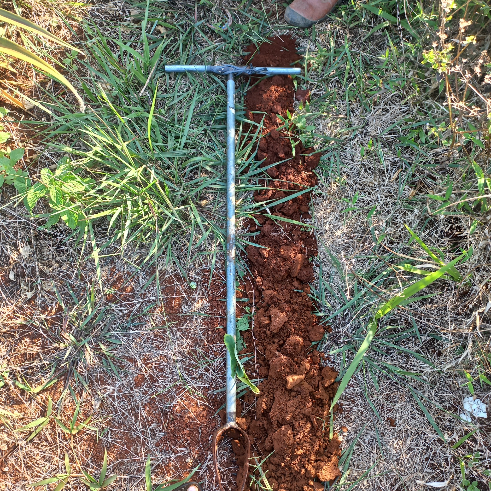
Soil and land characteristic surveys supporting land suitability evaluation and thematic reporting.
Selected documentation showing distinct areas of my work—from field survey and soil assessment to laboratory analysis, UAV operations, GIS communication, and spatial data processing.
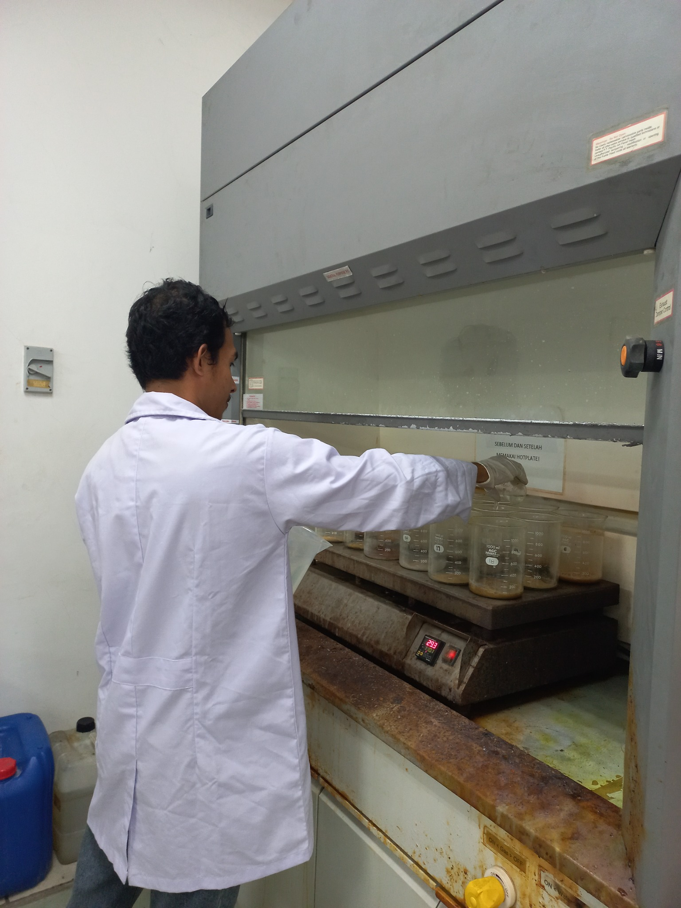
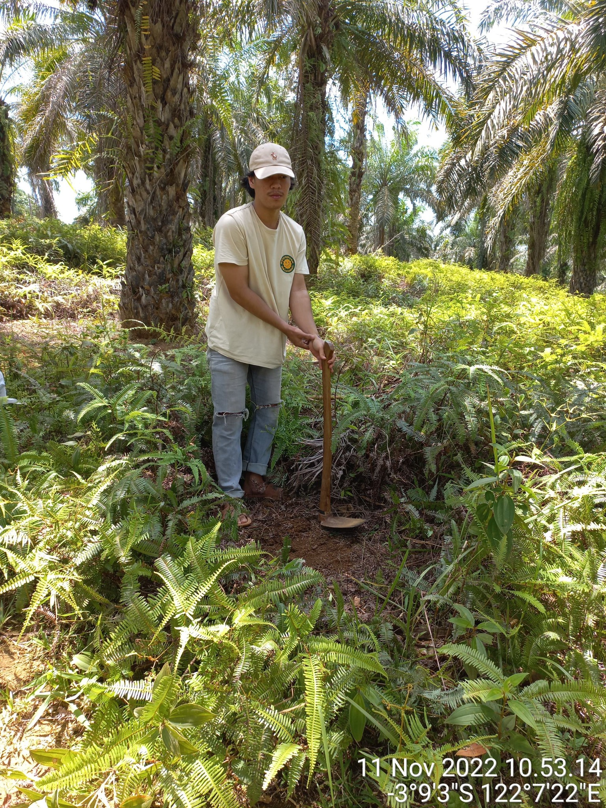
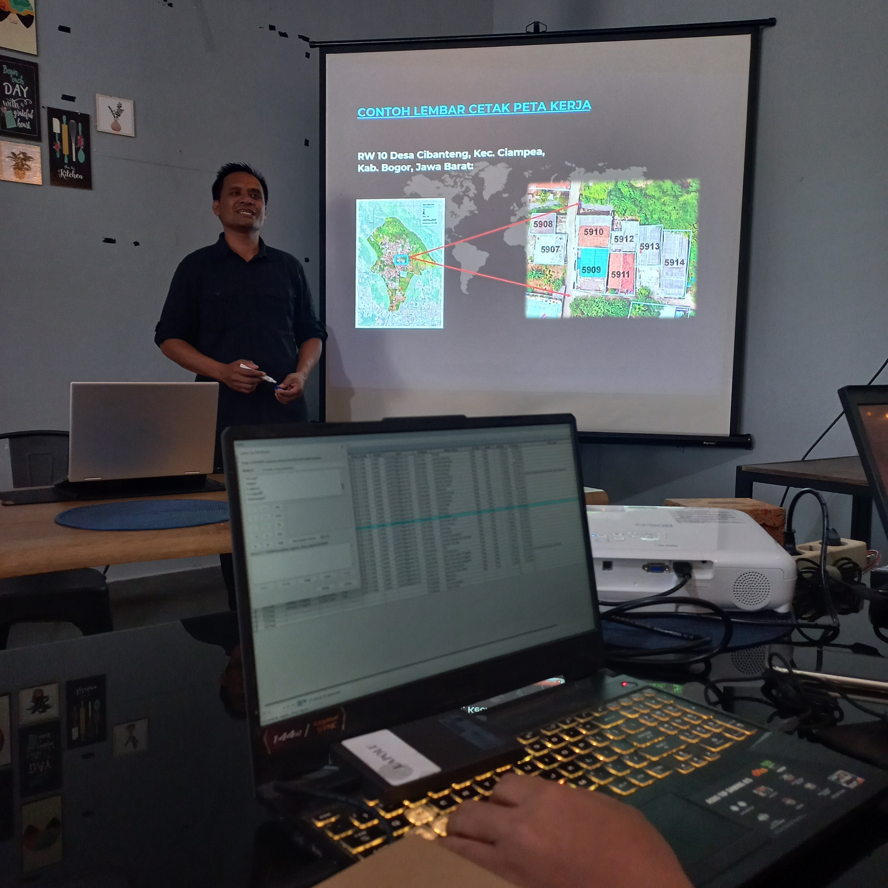
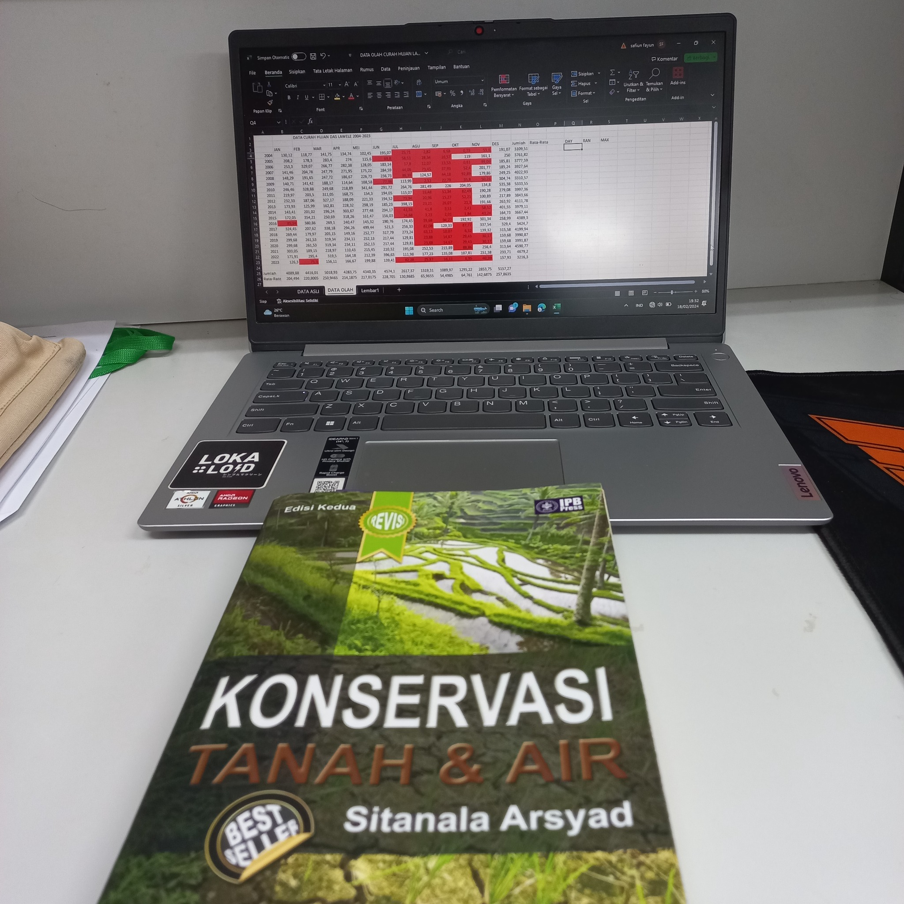
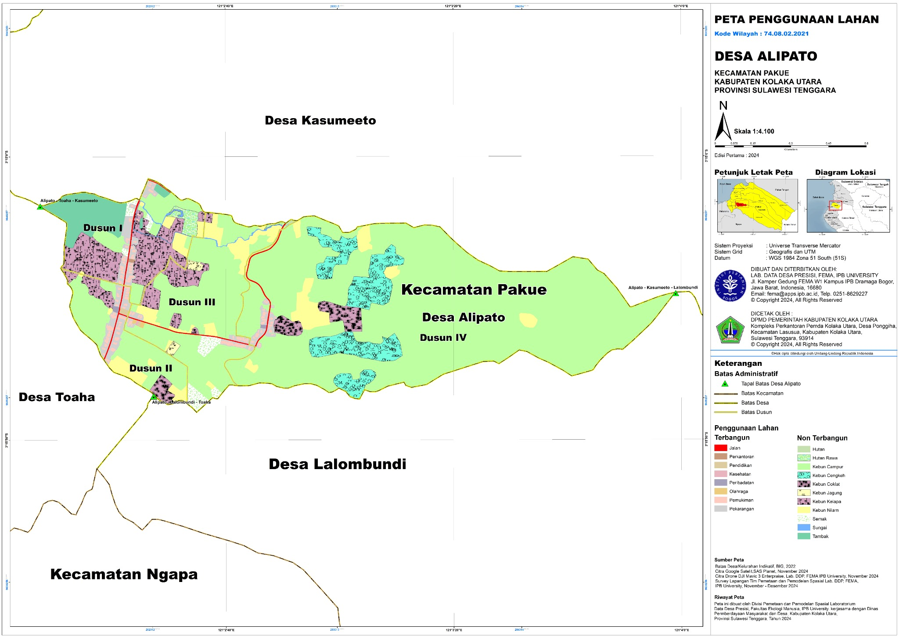
Professional experience spanning environmental programs, field research, community initiatives, data collection, and project coordination.
Supporting environmental program activities through coordination, stakeholder communication, documentation, monitoring, and operational support.
Supporting community-based activities through project coordination, administration, documentation, communication, and reporting.
Supporting field surveys and research activities through environmental and spatial data collection, GPS observations, field verification, and data validation.
Preparing visual communication materials and supporting digital content for organizational activities.
Supporting socio-economic surveys, community data collection, field activities, and program documentation.
Working on project-based assignments involving spatial analysis, field surveys, mapping, land and environmental data, technical documentation, and project support.
Combining formal education, scientific research, professional documentation, and practical project experience.
2023–2025
2018–2022
Undergraduate research focused on irrigation, soil fertility, and rice-field productivity.
Master's research accepted for publication in Jurnal Penelitian Pendidikan IPA (JPPIPA).
Technical environmental documentation related to wastewater utilization and infiltration for nickel mining activities.
Technical documentation supporting wastewater utilization and infiltration requirements.
Village profile compilation integrating regional, socio-economic, environmental, and supporting spatial information.
Area profile document supported by field observations, regional data, spatial information, and project documentation.
Open to work where my multidisciplinary background can contribute to field operations, environmental work, spatial analysis, data management, and project implementation.
Selected training, technical workshops, professional development programs, and academic activities supporting my multidisciplinary work.
Papua Mapping Center · 2020
Basic training in mapping using drone technology.
View certificate ↗2021
Professional development in social mapping, communication, project planning, risk management, monitoring, resource management, and team-based projects.
View certificate ↗2023
Participation in SolidWorks Intermediate Class Level workshop training.
View certificate ↗2021 · 20 JP
Completed basic accounting training as an additional administrative and financial-recording competency.
View certificate ↗Webinar · 2020
Professional learning activity related to small-scale gold mining practices in North Minahasa.
View certificate ↗National Webinar · 2020
Learning activity on innovation and technology for wetland agriculture and food self-sufficiency.
View certificate ↗World Soil Day · 2020
Participation in an online soil judging activity organized in celebration of World Soil Day.
View certificate ↗Delegation · 2019
Represented Universitas Halu Oleo as a delegation in the national FOKUSHIMITI XVI meeting.
View certificate ↗Participant · 2020
National discussion on agriculture, agricultural land, and farmer welfare.
View certificate ↗Selected certificate PDFs are stored inside this portfolio and can be opened individually from the cards above. Certificates containing sensitive personal identification data are intentionally excluded.
Bahasa Indonesia — Native
English — Professional Working Proficiency
I'm open to professional roles, project-based assignments, consulting opportunities, and collaborations across environmental, geospatial, field operations, data management, and project support.
Available for full-time opportunities · Project-based work · Independent consulting · Field assignments